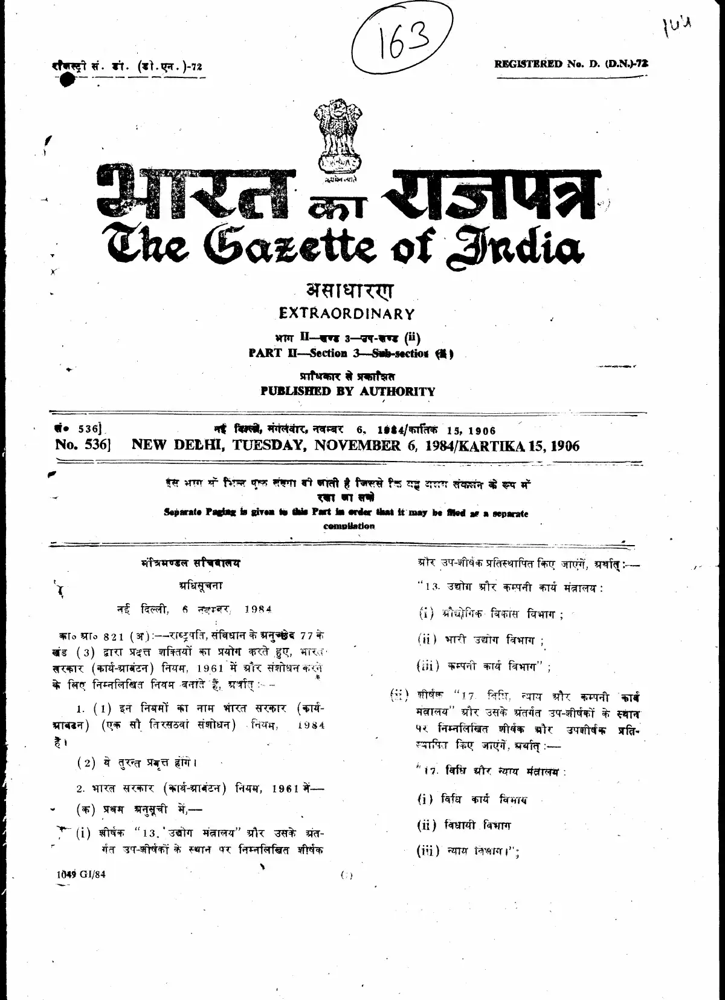
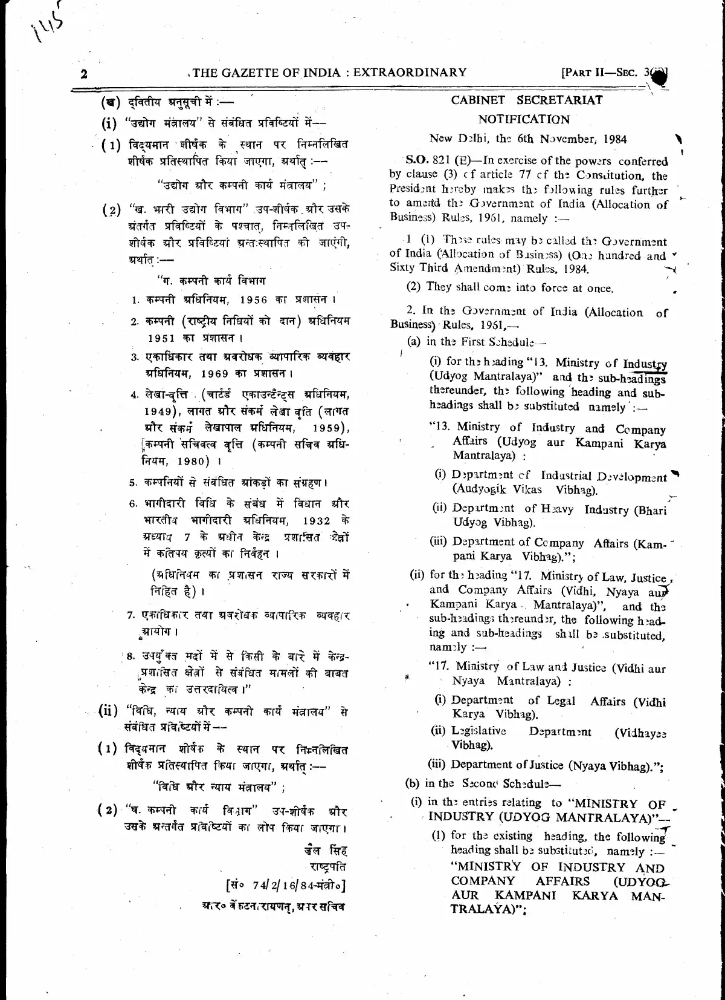
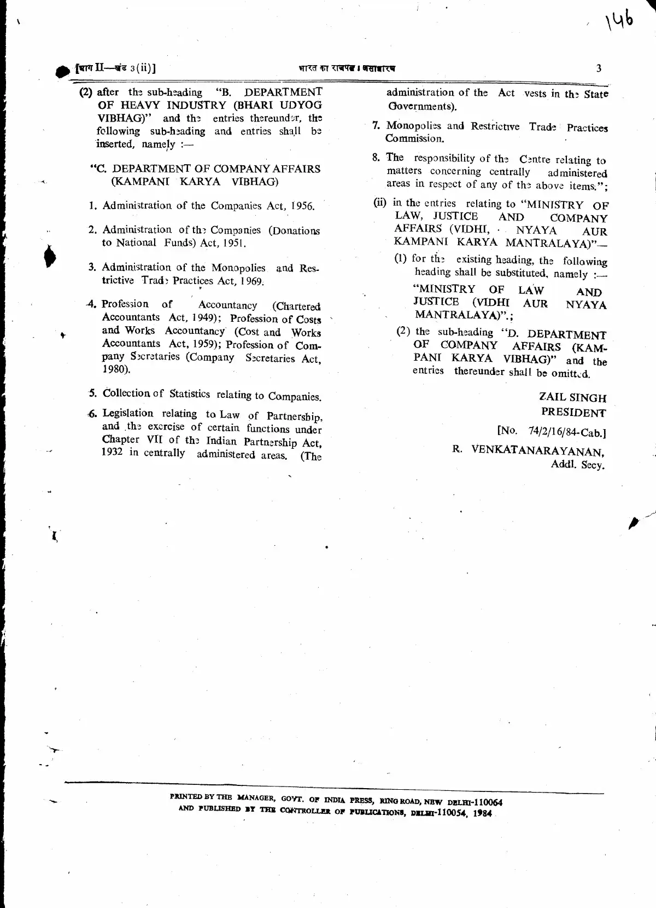

Amendment #163 (S.O. 821(E), 1984)
6 changes: 2 to the First Schedule, 4 to the Second Schedule. 6 applied
What it did to the ministries
- renamedMinistry of Industry is renamed Ministry of Industry and Company Affairs change 1, 3, 4 · histories: Industry
- renamedMinistry of Law, Justice and Company Affairs is renamed Ministry of Law and Justice change 2, 5, 6 · histories: Law and Justice
The order, page by page
Page 1 of 4

Page 2 of 4

123Schedule 1 › Ministry of Industry
- 13. Ministry of Industry and Company Affairs
- i. Department of Industrial Development
- ii. Department of Heavy Industry
- iii. Department of Company Affairs
applied at schedule 1 › ministry 11 in the Rules after #163
new extra
Schedule 1 › Ministry of Law, Justice, and Company Affairs
- 17. Ministry of Law and Justice (Vidhi aur • Nyaya Mantralaya):
- i. Department of Legal of Legal Affairs
- ii. Legislative Department (Vidhayee . Vibhag).
- iii. Department of Justice
applied at schedule 1 › ministry 14 in the Rules after #163
new extra, new missing
Schedule 2 › MINISTRY OF INDUSTRY
- MINISTRY OF INDUSTRY AND COMPANY AFFAIRS (UDYOG AUR KAMPANI KARYA MAN- TRALAYA)
applied at schedule 2 › ministry MINISTRY OF INDUSTRY AND COMPANY AFFAIRS (UDYOG AUR KAMPANI KARYA MAN- TRALAYA) in the Rules after #163
Page 3 of 4

456after Schedule 2 › MINISTRY OF INDUSTRY › DEPARTMENT OF HEAVY INDUSTRY
- C. DEPARTMENT OF COMPANY AFFAIRS
- 1. Administration of the Companies Act, 1956.
- 2. Administration of the Companies (Donations to National Funds) Act, 1951.
- 3. Administration of the Monopolies and Restrictive Trade Practices Act, 1969.
- 4. Profession of Accountancy (Chartered Accountants Act, 1949); Profession of Costs and Works Accountancy (Cost and Works Accountants Act, 1959); Profession of Company Secretaries (Company Secretaries Act 1980).
- 5. Collection of Statistics relating to Companies.
and 3 more
- 6. Legislation relating to Law of Partnership and the excrcise of certain functions under Chapter VII of the Indian Partnership Act 1932 in centrally administered areas. (The PRINTED BY THE MANAGER, GOVT. OF INDIA AND PUBLISHED BY THE CONTROLLER OF administration of the Act vests in the State…
- 7. Monopolies and Restrictive Trade Practices Commission.
- 8. The responsibility of the Centre relating to matters concerning centrally administered areas in respect of any of the above items.
applied at schedule 2 › ministry MINISTRY OF INDUSTRY AND COMPANY AFFAIRS (UDYOG AUR KAMPANI KARYA MAN- TRALAYA) › department C in the Rules after #163
read page break, states inferred so renamed
Schedule 2 › MINISTRY OF LAW, JUSTICE AND COMPANY AFFAIRS
- MINISTRY OF LAW AND JUSTICE
applied at schedule 2 › ministry MINISTRY OF LAW AND JUSTICE in the Rules after #163
Schedule 2 › MINISTRY OF LAW, JUSTICE AND COMPANY AFFAIRS › DEPARTMENT OF COMPANY AFFAIRS
applied at schedule 2 › ministry MINISTRY OF LAW AND JUSTICE › department D in the Rules after #163
states inferred earlier name
Page 4 of 4
How this document was read
Changes placed by an inference rule
| Change | Rule | Status | What |
|---|---|---|---|
| 4 | so_renamed | unreviewed | change 4: ministry MINISTRY OF INDUSTRY taken as MINISTRY OF INDUSTRY AND COMPANY AFFAIRS (UDYOG AUR KAMPANI KARYA MAN- TRALAYA), the name change 3 of this notification gave it |
| 6 | earlier_name | accepted | change 6: ministry MINISTRY OF LAW, JUSTICE AND COMPANY AFFAIRS taken for ministry MINISTRY OF LAW AND JUSTICE, its name before the First Schedule renamed it |
From the Government of India (Allocation of Business) Rules, 1961 and their amendments, as published by the Cabinet Secretariat (cabsec.gov.in), read by orgpedia. The readings of the older scanned gazettes have known gaps.